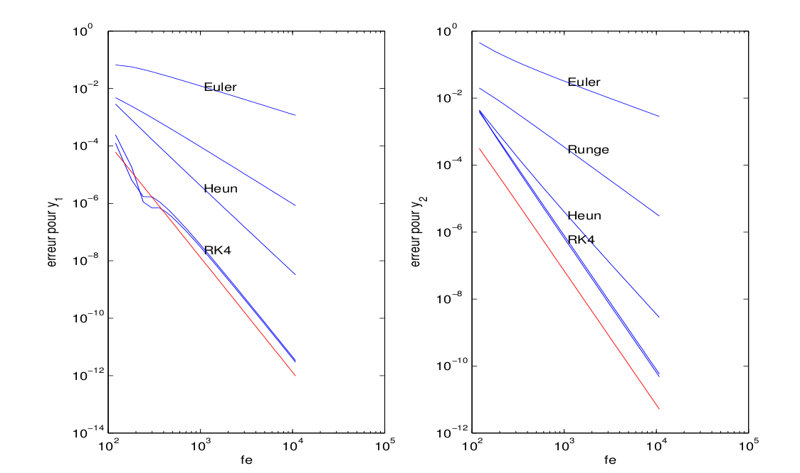

Résultats avec Gauß
 Figure 1 – Erreur globale en fonction du nombre d’évaluations. Pour Gaußen abscisse 4N afin de vérifier l’ordre. $fpitermax=15$, $f\_eps=10^{-12}$.
 Figure 2 – Erreur globale en fonction du nombre d’évaluations. $fpitermax=15$, $f\_eps=10^{-12}$.
Figure 2 – Erreur globale en fonction du nombre d’évaluations. $fpitermax=15$, $f\_eps=10^{-12}$.
 Figure 3 – Erreur globale en fonction du nombre d’évaluations. $fpitermax=15$, pour $f\_eps=10^{-12}$ et $f\_eps=10^{-6 }$ et $fpitemmax=2$, pour $f\_eps=10^{-14}$.
Figure 3 – Erreur globale en fonction du nombre d’évaluations. $fpitermax=15$, pour $f\_eps=10^{-12}$ et $f\_eps=10^{-6 }$ et $fpitemmax=2$, pour $f\_eps=10^{-14}$.